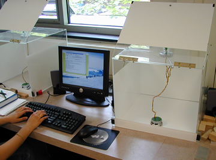
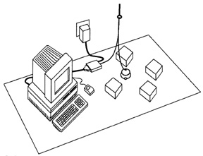
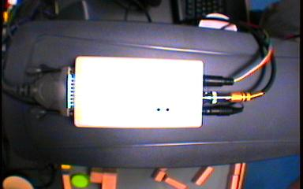

|
|||||||
| [ Home ] | [ Software ] | [ Curriculum ] | [ Hardware ] | [ Community ] | [ News ] | [ Publications ] | [ Search ] |
|
Using the Khepera RobotBefore you can use a Khepera robot with Pyro, you have to ensure that all the hardware is set up properly. This is not difficult and is outlined below. For more details, consult the Khepera Manual that shipped with your robot.  Once you have made the connections as described below, do the following:
Setting up the Khepera RobotHere, we will briefly explain how to set up a tethered connection to a basic Khepera 2 robot. There are two methods for setting up a Khepera: with a camera and without. This section discusses both methods, and some testing to ensure proper connection.
Khepera without CameraA typical setup is shown in the picture below (Illustration is taken directly from the Khepera 2 User Manual, Version 1.0, December 2001, page 22):
 For other configurations of the Khepera (for instance one with a camera or other accessories attached to it), the hardware interface may involve other components and the setup will be different from the one described below. Later, we will add at least setup instructions for a base Khepera with a camera. For the basic setup, you will need:
Refer to the Khepera User Manual for identifying the Khepera accessories. The standard serial cable is typically not supplied with the robot and its connectors can vary depending on the serial port available on your computer. To set up the robot workstation, do the following:
The picture below shows a Khepera workstation set up in the Emergent Intelligence Lab at Bryn Mawr College.
Khepera with cameraIn order to use the Khepera camera, you'll first need to install a video capture card on your machine. Then you can use the following set up:  Next: Using the Hemisson Robot Up: PyroHardware
|
| [ Home ] | [ Software ] | [ Curriculum ] | [ Hardware ] | [ Community ] | [ News ] | [ Publications ] | [ Search ] |
 View Wiki Source | Edit Wiki Source | Mail Webmaster
View Wiki Source | Edit Wiki Source | Mail Webmaster | |||||||